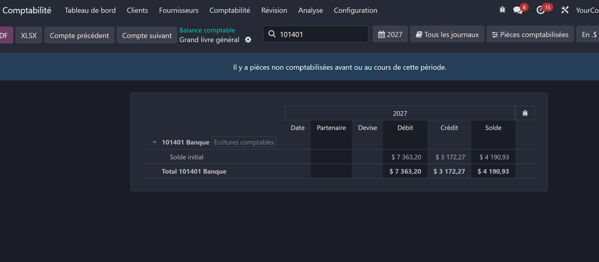
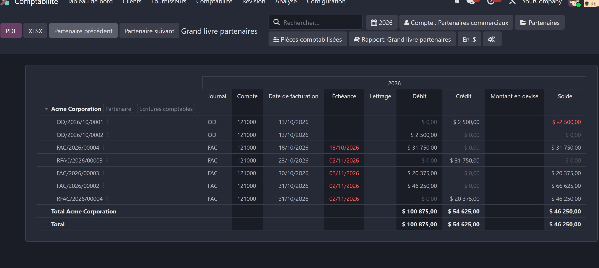

Review accounts and partners one after the other
Adds "Previous" and "Next" buttons to the general ledger and the partner ledger, so accountants can go through every account (or partner) in one click, without going back to the trial balance each time.
account_report_ledger_navigationReviewing accounts one by one from the trial balance means, for every account: unfolding the account groups, opening the menu next to the account, choosing "General ledger", then going back to the trial balance to start again with the next account.
This module turns that into a single click: once in the general ledger (or the partner ledger), the previous and next buttons go straight to the adjacent account (or partner), with the same filters.


This module is maintained by Nuxly. Visit nuxly.com